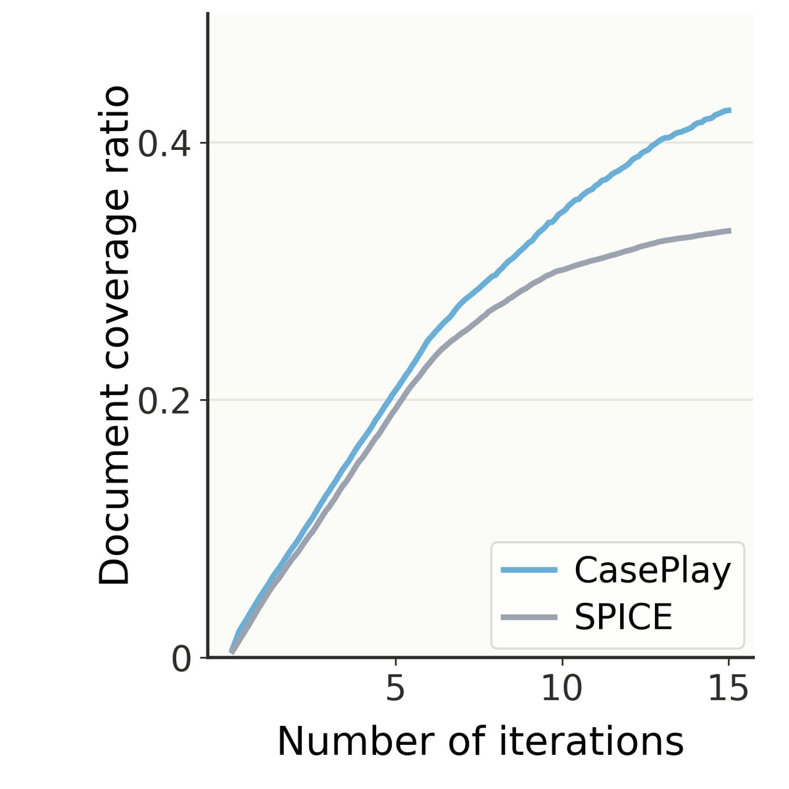
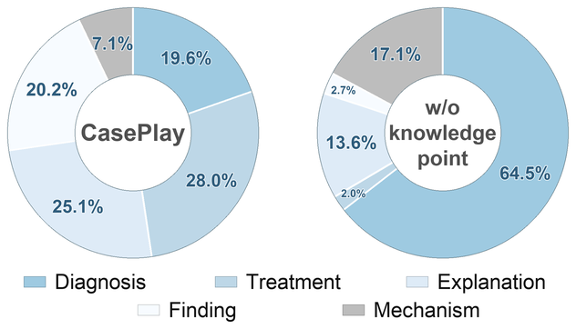
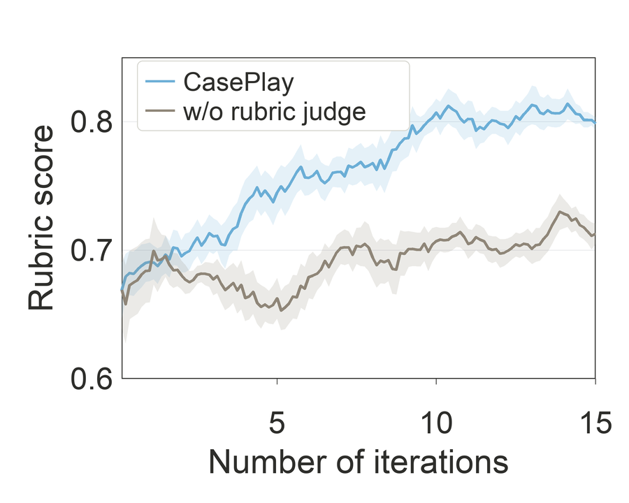

Un proposer (θ) et un reasoner (φ), tous deux issus du même checkpoint SFT, jouent en alternance sur 4 281 case reports PMC : le proposer écrit un QCM style USMLE conditionné sur un « knowledge point » pré-extrait du rapport et choisi par round-robin sur l'indice de rollout, et touche un reward à quatre canaux — learnability (le reasoner gelé répond 4 fois, optimum à 50 %) plus trois dimensions de rubrique notées par le reasoner lui-même (clue integration, reasoning depth, option quality) ; le reasoner est ensuite entraîné en GRPO sur les questions générées, sans jamais voir le document [§3, Alg. 1].
Claim principal, précisément : sur Qwen3-8B-Base warm-starté par SFT, 15 itérations × (10 steps proposer + 10 steps reasoner), CasePlay porte la moyenne de 7 benchmarks de 63,1 à 66,2 (+3,1), avec +6,3 sur LiveClin, et dépasse en moyenne les trois baselines de self-play R-Zero (62,4), SPICE (63,7) et DARC (65,0) [Tab. 2, Tab. 9].
Pourquoi ce papier compte pour ce corpus : c'est le chemin structurel complet corpus non labellisé → banque de tâches RL → entraînement, instrumenté bout en bout, avec deux pathologies du proposer nommées et mesurées, et — c'est rare — deux bras sans self-play à budget reasoner apparié. C'est aussi, et c'est le point à retenir, un pipeline où la réponse de référence est écrite par le proposer et n'est vérifiée par rien.
| # | Étape | Mécanisme | Volume | Taux de rejet |
|---|---|---|---|---|
| 1 | Collecte | case reports open-access PubMed Central publiés 2020-2025 [§4.1, App. C.2] | non précisé (aucun compte initial) | — |
| 2a | Filtrage document | XML non parsable · pas de full text · formatage incomplet · < 500 tokens [App. C.2] | non précisé | non calculable |
| 2b | Filtrage corpus | dédup par document ID, puis quasi-doublons par similarité n-gram ; comptage figures/tables par regex → exclusion des articles « dominés par le visuel » [App. C.2] | non précisé | non calculable |
| 2c | Décontamination | (i) document-level : suppression de tout rapport dont le document ID apparaît dans LiveClin ; (ii) fine-grained : découpage en chunks, comparaison n-gram de chaque chunk contre chaque question de chaque benchmark → le rapport entier est jeté sur un seul hit [App. C.2] | non précisé | non calculable |
| 2d | Nettoyage | suppression acknowledgements, funding, author contributions, COI, références, métadonnées ; priorité aux sections case presentation / diagnosis / treatment / outcome / discussion ; troncature à 4 096 tokens [App. C.2] | — | — |
| 2 | Corpus final | — | |D| = 4 281 case reports | — |
| 3 | Knowledge points | le proposer lui-même extrait des candidats (prompt Tab. 5, 8 « Hard Grounding Rules »), retire les recouvrements, garde au plus M = 4 ; gelés pour tout l'entraînement « to avoid introducing additional non-stationarity » [§3.1, App. C.3] | ≤ 4 × 4 281 ≈ ≤ 17 124 (le nombre réalisé n'est pas donné) | non mesuré |
| 4 | Génération | proposer conditionné sur (rapport complet, 1 KP), N_p = 4 rollouts / document, sortie JSON à 5 champs : question_type ∈ {diagnosis, mechanism, finding, explanation, treatment}, exam_question, options (4 à 8), correct_answer, knowledge_and_reasoning_steps [App. C.4, Tab. 6] |
128 docs × 4 = 512 candidats/step proposer ; × 150 steps ≈ 76 800 candidats (⚠️ mon calcul, en supposant que « train batch 128 » = 128 documents — ambigu dans Tab. 8) | — |
| 5 | Validité | purement structurelle : champs manquants, options malformées, labels non contigus, réponse correcte ambiguë, structure non parsable → invalid ; pénalité r^format = −0,1, exclu de l'entraînement du reasoner [App. C.4, Tab. 8] |
— | non précisé |
| 6 | Scoring (pas filtrage) | learnability 1 − 2\|acc−0,5\| sur N_acc = 4 réponses du reasoner sans document ; 3 scores de rubrique 1-5 normalisés [0,1] [§3.2] |
— | — |
| 7 | Buffer | toutes les paires (q, y) valides entrent dans B_t ; le reasoner en échantillonne un sous-ensemble [Alg. 1 l. 14, l. 21] |
— | — |
Taux de rejet : introuvable à chacune des sept étapes. Aucun volume avant filtrage, aucun taux d'invalid en rollout. ⚠️ C'est la lacune la plus coûteuse du papier pour qui veut dimensionner un pipeline équivalent : on ne sait ni combien de rapports PMC il faut aspirer pour en retenir 4 281, ni quelle fraction des rollouts du proposer part à la poubelle.
Le seul chiffre proche d'un taux de rejet, et il est mauvais : la proportion de « questions apprenables » au sens GRPO (0 < acc(q) < 1) monte de 27 % à 38 % quand λ passe de petit à 0,2 [§4.4]. Donc au meilleur réglage, 62 % des questions générées produisent un groupe dégénéré (toutes correctes ou toutes fausses), d'advantage nul sous reward binaire. Et avec N_acc = 4, acc(q) ne prend que 5 valeurs {0, 0,25, 0,5, 0,75, 1} : le signal de difficulté est à 5 niveaux, et « difficulté intermédiaire » veut dire exactement 2/4.
Pas de stratification à la construction. La seule caractérisation est a posteriori : Fig. 3(a) montre, sur 10 % des documents d'entraînement tirés au hasard, que la précision du reasoner varie « substantiellement » entre les KP d'un même rapport (dumbbell plot KP le plus facile / le plus dur). ⚠️ Aucune valeur numérique n'accompagne cette figure dans le texte.
Traitée sérieusement, et c'est le meilleur morceau du pipeline : décontamination à deux niveaux (ID de document contre LiveClin, puis chunk-vs-question n-gram contre tous les benchmarks), avec la règle dure « un chunk suspect ⇒ le rapport entier est jeté » [App. C.2]. ⚠️ Non précisé : le seuil n-gram, la taille des chunks, le nombre de rapports éliminés, et la contamination des benchmarks dans le pré-entraînement de Qwen3 (elle frappe identiquement tous les bras, donc elle ne menace pas le relatif).
20 % des rapports retenus (≈ 856 documents) sont donnés à DeepSeek-V3.2, qui génère une question de proposer par knowledge point extrait ; pour chaque question, deux réponses correctes de reasoner sont échantillonnées. Résultat : 3 384 exemples proposer + 6 768 exemples reasoner, 5 époques, LR 1e-5, batch 128, cosine, warmup 0,1 [App. C.2, Tab. 8]. Le même warm-start sert à CasePlay et à toutes les baselines de self-play — c'est explicite et c'est la condition qui rend Tab. 2 lisible.
⚠️ Conséquence peu commentée : le reasoner a été SFT sur des questions tirées des mêmes documents qu'il devra ensuite résoudre en self-play. Ce n'est pas une contamination de benchmark, mais ça gonfle la solvabilité apparente de la banque, donc le acc(q) sur lequel repose tout le curriculum.
Zéro heure d'annotation. Le seul travail humain est la rédaction de trois prompts (Tab. 5 extraction de KP, Tab. 6 génération, Tab. 7 rubrique — tous recopiés intégralement en annexe, c'est à mettre à leur crédit) et des regex de filtrage. ⚠️ Non précisé en heures. Le coût est déplacé sur le compute et sur DeepSeek-V3.2.
Il n'y a pas d'outils, pas de multi-turn, pas d'exécution. C'est un environnement à deux MDP single-turn couplés [§2], et c'est important de le dire : tout le corpus d'infra (parsing d'appels d'outils, compaction, propriété de préfixe) est structurellement inapplicable ici.
MDP proposer M^P_t = (O^P, A^P, R^P) :
- Observation : un batch de documents cliniques {d_i} + un knowledge point sélectionné + le prompt Tab. 6. Max input 4 096 tokens — le rapport est tronqué à cette longueur dès le préprocessing.
- Action : un bloc <think>…</think> suivi immédiatement d'un objet JSON, sans markdown ni code fence. Max output 8 192 tokens.
- Horizon : 1 tour. Pas de reset, pas de timeout, pas d'état.
- Sorties mal formées : parsées, marquées invalid, pénalité −0,1 sur les quatre canaux de reward simultanément, et l'évaluation par le reasoner est sautée [Alg. 1 l. 10]. ⚠️ Bonne hygiène — l'échec est compté et non silencieux — mais le taux n'est jamais loggé, donc on ne sait pas si −0,1 est une pénalité marginale ou la moitié du signal.
MDP reasoner M^R_t :
- Observation : la question générée seule. Le papier insiste quatre fois (§2, §3.2, Alg. 1 l. 11 et l. 23) : « without access to the source document ». C'est la propriété d'isolement la plus importante du design.
- Action : une réponse avec la lettre finale dans \boxed{}, extraite par math-verify à l'éval [App. D.2].
- Horizon : 1 tour. N_r = 8 réponses par question en entraînement, Avg@8 à l'éval.
Sélecteur de focus — le seul « harness » de l'env : round-robin déterministe sur l'indice de rollout, π^sel(k = k_m | K(d), j) = 1[m = 1 + ((j−1) mod M)] [Éq. 4]. Non appris, non adaptatif, non stochastique. Avec M = 4 et N_p = 4, chaque rollout d'un document touche un KP différent, exactement une fois — le round-robin est donc, au réglage par défaut, une simple énumération exhaustive.
Exemple de trajectoire — les quatre questions engendrées par les quatre KP d'un même rapport (femme de 35 ans, gastro-entérite à éosinophiles) [Fig. 7] : - KP1 (éosinophilie sanguine normale malgré infiltration tissulaire) → « … 1 % éosinophiles, compte absolu 0,07 ×10³/µL. Une gastro-entérite à éosinophiles est suspectée. Quel résultat est le plus probable ? » → gold : « Dense intramucosal eosinophils ». - KP2 (diagnostic sur biopsie malgré endoscopie normale) → « coloscopie macroscopiquement normale, biopsies iléales et coliques avec infiltration éosinophilique marquée. Diagnostic le plus probable ? » → gold : « Eosinophilic gastroenteritis and colitis ». - KP3 (dépendance aux stéroïdes) → gold : « Steroid dependence ». - KP4 (adalimumab en rémission) → gold : « Adalimumab ».
⚠️ La figure vitrine du papier contient la pathologie que la rubrique est censée punir. L'item KP1 énonce le diagnostic dans le vignette et demande le signe pathognomonique : c'est du 1-hop avec un indice décisif unique, soit exactement « clue integration = 1 » et « reasoning depth = 1 » de leur propre barème (Tab. 7). Et KP1/KP2 sont des miroirs l'un de l'autre (l'un donne le diagnostic et demande la biopsie, l'autre donne la biopsie et demande le diagnostic) — ce que la règle de non-recouvrement des KP était censée empêcher. Si c'est là leur meilleur exemple, la queue basse de la distribution est à examiner.
r̃ᵢˢ = (rᵢˢ − meanⱼ rⱼˢ) / (stdⱼ rⱼˢ + ε) pour s ∈ {learn, clue, depth, option}
Âᵢᴾ = r̃ᵢ^learn + λ (r̃ᵢ^clue + r̃ᵢ^depth + r̃ᵢ^option) λ = 0,2
[Éq. 6, Tab. 8]. Règle d'agrégation = somme pondérée, pas de conjonction, pas de clause d'échec — sauf r^format = −0,1 appliqué aux quatre canaux à la fois, ce qui est la seule vraie clause d'échec du design.
⚠️ Le choix de normaliser chaque composante dans le groupe avant d'agréger est bon et mérite d'être repris : il empêche un canal à forte variance d'écraser les autres, et il rend λ interprétable comme un ratio d'écarts-types et non d'unités. ⚠️ Mais il a un coût que le papier ne relève pas : avec N_p = 4, std_j est estimé sur 4 points, et sur un canal de rubrique à 5 niveaux les groupes à variance nulle (les 4 candidats notés pareil) doivent être fréquents — le ε les transforme en bruit amplifié. Aucune statistique là-dessus.
Binaire, exact : 1 si la réponse finale correspond à y, la réponse cible fournie par le proposer, 0 sinon ; normalisé dans le groupe de N_r = 8 [Alg. 1 l. 24-25]. C'est un vérifieur exact — mais exact par rapport à un label généré, pas par rapport au document.
Trois énoncés du prompt tiennent lieu de garantie de bonne position de la tâche [Tab. 6] : - « The correct answer must be supported by the document. » - « Do not invent decisive diagnoses, mechanisms, findings, timelines, management steps, or outcomes. » - « The question must be solvable without mentioning the source article. »
Aucun des trois n'est vérifié. Pas de NLI, pas d'alignement de span, pas d'extraction de la réponse depuis le rapport, pas de second modèle qui confirme le gold, pas d'audit humain d'un échantillon. Le correct_answer est émis par le proposer, et le proposer est sous pression d'optimisation GRPO. La chaîne complète est : le proposer extrait les KP → le proposer écrit la question → le proposer écrit le gold → le reasoner estime la difficulté contre ce gold → le reasoner note la qualité → le reasoner est entraîné à produire ce gold. Aucun signal exogène n'entre dans la boucle après l'extraction des knowledge points, qui est elle-même faite par le proposer. Le document n'entre que par le contexte du proposer.
π^J_φ, c'est-à-dire le reasoner courant lui-même [Éq. 5]. Les auteurs l'écrivent : « Since the rubric scores are produced by the current reasoner rather than a stronger external judge, an important concern is whether these scores provide reliable quality feedback. » [§4.3]Corrélation de Pearson entre les scores du reasoner et ceux de DeepSeek-V3.2 avec le même prompt de rubrique [Tab. 3] : clue integration 0,783 · reasoning depth 0,752 · option quality 0,627 · score moyen 0,705.
⚠️ Cinq défauts, chacun séparément suffisant pour rendre ce chiffre illisible : 1. Mesurée une seule fois, à un checkpoint non précisé. La seule chose qui attraperait une dérive du juge serait cette corrélation tracée par itération — elle ne l'est pas. 2. Pearson, pas accord. Pearson est invariant par transformation affine : un juge qui dérive en notant tout 1 point plus haut garde r ≈ 1. Et ce qui compte ici, vu Éq. 6, est le classement intra-groupe de 4 candidats, que Pearson sur un échantillon poolé ne mesure pas. Ni Spearman, ni Kendall, ni κ pondéré, ni taux d'accord exact, ni FP/FN séparés. 3. La référence n'est pas indépendante. DeepSeek-V3.2 a généré les données de warm-start [App. C.2], a généré le pool synthétique statique de la baseline [App. E], et note la figure de motivation [App. B]. Le même modèle est la source des données, le générateur du comparateur, et le validateur du juge. 4. Pas de plafond de bruit. Aucun r DeepSeek-vs-DeepSeek, aucune reproductibilité du juge à température > 0, aucune référence humaine. 0,705 contre un plafond inconnu ne dit rien. 5. n non précisé pour Tab. 3.
Aucune section de reward hacking, aucun test contre des solutions dégénérées, aucun mutant d'item, aucun proposer adversaire. ⚠️ Et la stratégie dégénérée évidente est grande ouverte : le proposer contrôle à la fois la question et le label gold, donc « écrire un item dont le gold annoncé est défendable mais dont la vraie réponse est un distracteur » marque bien sur les quatre canaux — il paraît profond à la rubrique (la chaîne de raisonnement est cohérente, c'est le proposer qui l'écrit), et le reasoner se trompe à peu près une fois sur deux, donc r^learn est maximal. Le reasoner est alors entraîné vers le mauvais label, et rien dans le pipeline ne peut le voir. Le papier ne mentionne pas ce mode de défaillance.
Algorithme : GRPO [Éq. 5 du papier, grpo] pour les deux phases, en alternance, un modèle gelé pendant que l'autre est mis à jour [§3.3]. La seule déviation du standard est la normalisation d'advantage composante par composante côté proposer (Éq. 6).
Hyperparamètres complets [Tab. 8, §4.1, App. D.3] :
Itérations self-play T |
15 |
Steps proposer / itération U_P |
10 |
Steps reasoner / itération U_R |
10 |
Candidats proposer N_p |
4 |
Réponses pour estimer acc N_acc |
4 |
Réponses reasoner N_r |
8 |
| Train batch | 128 |
| LR (RL) | 1e-6 |
| LR (SFT warm-start) | 1e-5, 5 époques, cosine, warmup 0,1 |
| Clip upper | 0,28 (⚠️ clip lower non précisé — asymétrie type « clip-higher » implicite) |
Pénalité invalide r^format |
−0,1 |
| Poids learnability | 1,0 |
Poids rubrique λ |
0,2 |
Knowledge points M |
4 |
| Max input / output | 4 096 / 8 192 |
| Température / top-p (train) | 1,0 / 0,95 |
| Température / top-p (éval) | 0,6 / 0,95 |
Non précisé, et ça compte : aucun terme KL n'est mentionné nulle part dans le papier (ni coefficient, ni « we remove the KL penalty ») ; pas de clip lower ; pas de politique de rééchantillonnage des groupes à advantage nul ; pas de nombre d'époques par batch RL ; pas de warmup RL.
Stabilité : ce qui a cassé → rien n'est raconté. Aucune courbe de reward, aucune courbe de longueur de réponse (hors la colonne « Resp. Len. » de Tab. 1), aucune courbe d'entropie. Les seules dynamiques tracées sont les scores de rubrique (Fig. 4, Fig. 8) et la couverture documentaire (Fig. 2a). ⚠️ Pour un papier de self-play — le réglage où l'effondrement de diversité et la dérive du juge sont les risques nommés — l'absence de courbe d'entropie de la policy est un trou.
Le choix de design anti-non-stationnarité, à retenir : les knowledge points sont extraits une fois avant le RL et gelés, explicitement « to avoid introducing additional non-stationarity into proposer optimization » [§3.1, App. C.3]. Les auteurs en font eux-mêmes leur limitation principale [App. F].
Compute [App. D.3] : six nœuds de 8 GPU (48 GPU), répartition proposer:reasoner en ratio 2:4, colocation GPU désactivée dans Verl parce que les rollouts alternent, et Ray repartitionne les ressources entre les deux phases. Type de GPU, wall-clock et coût par step : non précisé.
Le papier nomme et mesure deux failure modes — mais ce sont ceux des méthodes antérieures, pas les siens. Sur CasePlay lui-même, l'inventaire est vide.
| Cas | Comportement | Détection | Correction | Correction évaluée ? |
|---|---|---|---|---|
| Knowledge-point fixation (de SPICE) | le proposer s'ancre sur l'indice le plus saillant et reformule autour | DCR plafonnant à 0,33 [Fig. 2a] ; MDS en cluster serré [Fig. 2b] ; 64,5 % d'items diagnosis sans conditionnement [Fig. 3b] |
KP explicites + round-robin | Oui : +1,3 point (64,9 → 66,2), DCR 0,33 → 0,42 [Tab. 2, Tab. 12] |
| Difficulty-quality mismatch (de SPICE) | à acc = 0,5, les items restent mal construits ou superficiels |
31,3 % des items de difficulté intermédiaire de SPICE ont une rubrique ≤ 0,6, sur 5 000 échantillonnés parmi 7 915 [§2, App. B] | reward de rubrique à λ = 0,2 | Oui, deux fois : filtrage a priori +0,8 vs placebo aléatoire de même taille [Tab. 1] ; reward +1,9 (64,3 → 66,2) [Tab. 2] |
| Sélecteur adaptatif qui effondre la couverture | « accuracy-priority » sur-concentre la génération | DCR 0,32 vs 0,42 [Tab. 12] | abandon du sélecteur adaptatif | Oui, par construction — c'est leur raison de choisir le round-robin |
| Label gold faux | — | aucune | aucune | — |
| Dérive du juge sur 15 itérations | — | aucune (un Pearson à un instant) | aucune | — |
| Fuite dans l'énoncé | item 1-hop qui nomme le diagnostic | la rubrique le pénalise en douceur (λ = 0,2, canal normalisé, pas un gate) | — | non — et ⚠️ l'exemple vitrine Fig. 7 en contient un |
⚠️ Est-ce crédible, vu le reward ? Non. Le reward a un canal de label non vérifié et un juge qui est le solveur. Un papier qui ne trouve aucun failure mode à sa propre méthode dans ce réglage ne les a pas cherchés. À leur crédit, la section Limitations [App. F] est honnête sur le gel des KP et l'absence de multimodal, et Broader Impacts [App. G] note explicitement que les case reports décrivent « des cas inhabituels ou publiables plutôt que des populations représentatives » — un biais de sélection du corpus qu'ils ne corrigent pas mais qu'ils nomment.
| Stack | Verl + vLLM + Ray [App. D.3] |
| Matériel | 6 nœuds × 8 GPU = 48 GPU, type non précisé |
| Partition | proposer:reasoner = 2:4, « yields the best runtime performance » |
| Colocation | désactivée — les rollouts proposer et reasoner sont alternés, Ray repartitionne entre les phases |
| Sync/async | alternance strictement synchrone : phase I complète, puis phase II. Pas de pipelining entre les deux. |
| Débit, wall-clock, coût/step | non précisé |
⚠️ Le chiffre que le papier ne donne pas et qu'il faut pour dimensionner (mon calcul, hypothèse « train batch 128 = 128 documents ») : - par step proposer : 128 docs × N_p 4 = 512 candidats ; chaque candidat valide coûte N_acc 4 réponses du reasoner + 1 appel de rubrique = 5 générations → 2 560 générations de reasoner par step proposer, purement pour le reward ; - sur 150 steps proposer : ≈ 384 000 générations de scoring ; - entraînement du reasoner : 128 questions × N_r 8 = 1 024 générations/step × 150 steps ≈ 154 000 ; - → ≈ 71 % de toutes les générations du reasoner servent à calculer le reward, pas à entraîner (384/538). C'est le goulot réel, et il explique le ratio GPU 2:4.
Coût d'instrumentation hors boucle, également non chiffré : la métrique DCR demande à Qwen3-32B d'extraire 48,3 clues en moyenne par document sur les 4 281 documents (≈ 207 000 clues) puis, pour chaque question générée, d'identifier le sous-ensemble de clues utilisées. ⚠️ C'est un pipeline LLM aussi cher que l'entraînement, et sa fiabilité n'est jamais mesurée : aucun accord inter-run sur l'attribution de clues, aucune validation humaine. La métrique centrale de la pathologie n°1 repose sur un juge non validé.
| # | Chiffre (abstract / intro) | Source dans le corps | Verdict |
|---|---|---|---|
| 1 | « improves the SFT warm-start model by 3,1 points on average » | Tab. 2 : 63,1 → 66,2 = +3,1 | confirmé, à la décimale |
| 2 | « highlighted by a 6,3-point gain on LiveClin » | Tab. 2 : 66,0 → 72,3 = +6,3 | confirmé |
| 3 | « outperforms existing self-play baselines » | Tab. 2 : 66,2 vs DARC 65,0, SPICE 63,7, R-Zero 62,4 — meilleur en moyenne sur 7/7 benchmarks | sur-généralisé : vrai en moyenne, mais non significatif contre la meilleure baseline. Tab. 9 (3 seeds, IC 95 % bootstrap) : les IC de CasePlay ne sont entièrement au-dessus de ceux de SPICE que sur MedQA et LiveClin, et de ceux de R-Zero que sur 5 benchmarks sur 7. Contre DARC, aucun IC disjoint nulle part — les auteurs l'écrivent eux-mêmes : « the intervals overlap in the remaining comparisons ». L'écart vs DARC est de +1,2 point avec des σ par benchmark de 0,1 à 1,8. |
| 4 | « seven medically related benchmarks » | App. D.2 : 7 benchmarks, 2 450 + 308 + 308 + 1 273 + 1 450 + 1 535 + 103 = 7 427 questions | confirmé |
| 5 | intro : « SPICE's source-document coverage quickly saturates at 0,33 » | Fig. 2(a) | contredit par la figure : à l'itération 15 la courbe SPICE est à ≈ 0,33 mais encore en pente positive, elle ne sature pas ; et les deux courbes sont superposées jusqu'à l'itération ~6, donc « quickly » est faux. Deux lectures : 0,33 = valeur au dernier point, pas une asymptote. |
| 6 | §2 : « 31,3 % receiving rubric scores no higher than 0,6 » | §2 + App. B : n = 5 000 échantillonnés parmi 7 915 items de SPICE à acc = 0,5 |
confirmé, dénominateur donné. ⚠️ Le chiffre homologue pour CasePlay n'est pas donné en texte (seulement dans l'histogramme Fig. 2c) |
| 7 | §2 : RL filtré 63,1 → 64,3 vs aléatoire 63,5 | Tab. 1 | confirmé. ⚠️ Un seul seed, pas d'IC, et 64,3 est exactement la valeur de « w/o rubric judge » en Tab. 2 — deux expériences différentes, même nombre, sans commentaire |
| 8 | §4.3 : « 64,5 % of all generated questions » sont diagnosis sans KP |
Fig. 3(b) | confirmé par la figure (64,5 % contre 28,0 % pour le type majoritaire de CasePlay). ⚠️ Dénominateur non précisé : le nombre de questions derrière le camembert n'est donné nulle part |
| 9 | §4.4 : coverage « 27 % at M = 1 to 43 % at M = 8 » | Fig. 5(a) | confirmé en tendance ; ⚠️ 43 % à M = 8 contre 42 % à M = 4 ⇒ le gain de couverture au-delà de M = 4 est de 1 point, et l'accuracy baisse |
| 10 | §4.4 : λ = 0,2 fait passer les questions apprenables de 27 % à 38 % | Fig. 5(b) | confirmé. ⚠️ Lu à l'envers : 62 % des questions restent dégénérées au meilleur réglage |
| 11 | §4.5 : Qwen3-4B +4,4 (54,4 → 58,8), OctoThinker-3B +2,7 (39,4 → 42,1) | Tab. 4 | confirmé. ⚠️ Sur-généralisé sur « best in every setting » : sur Qwen3-4B, GPQA 47,4 contre 47,8 pour DARC — une cellule perdue, et le papier met pourtant DARC en gras sur cette cellule sans le commenter dans le texte. Un seul seed pour Tab. 4. |
| 12 | App. E : static pool 64,1 vs 66,2 | Tab. 10 | confirmé |
| 13 | App. E : Fleming-R1-7B 54,9 → 57,3 (+2,4), LiveClin +5,1 | Tab. 11 | confirmé. ⚠️ Un seul seed |
| 14 | §4.3 : juge « sufficiently reliable », r = 0,705 | Tab. 3 | confirmé comme chiffre, sur-généralisé comme conclusion : Pearson sans plafond de bruit, sans référence humaine, sans FP/FN, contre un validateur (DeepSeek-V3.2) qui est aussi la source des données de warm-start et du pool comparateur |
Bilan 7.0 : les chiffres de tête sont exacts et traçables — c'est rare et c'est à noter. Les sur-généralisations portent toutes sur la force des conclusions, pas sur les valeurs : « outperforms self-play baselines » n'est pas significatif contre DARC, « saturates » est contredit par la figure, et « sufficiently reliable » repose sur un instrument non calibré.
Qwen3-8B-Base : 41,0 → 63,1 (SFT seul) → 66,2 (CasePlay). ⚠️ Le SFT warm-start apporte +22,1 points, le self-play RL +3,1. Soit 12 % du gain total au-dessus du modèle de base. C'est le cadrage qu'il faut garder : CasePlay est une phase de raffinage, pas le moteur principal.
| Variante | Avg. | Δ vs CasePlay |
|---|---|---|
| CasePlay | 66,2 | — |
| w/o knowledge-point | 64,9 | −1,3 |
| w/o rubric judge | 64,3 | −1,9 |
| w/o proposer update (proposer gelé au SFT) | 63,2 | −3,0 |
| Static synthetic pool + GRPO [Tab. 10] | 64,1 | −2,1 |
| ⚠️ Aucune de ces lignes n'a de seed ni d'IC : Tab. 9 ne couvre que les 4 méthodes de self-play. Les σ par benchmark observés là-bas vont de 0,1 à 2,6 ; des ablations à 1,3 et 1,9 point de moyenne sont donc à la limite du bruit mesuré par les auteurs eux-mêmes sur le même protocole. |
Les trois contrôles qui décident si le gain vient de la boucle ou d'autre chose. Deux sur trois sont présents, le troisième est le bon point dur.
(i) Bras sans self-play, à budget apparié — PRÉSENT, deux fois, et c'est la meilleure partie du papier. - Static Synthetic Data + GRPO [Tab. 10, App. E] : DeepSeek-V3.2 génère ≈ 19 000 paires Q-R depuis les mêmes 4 281 rapports ; le pool est fixe pour tout l'entraînement. Appariés explicitement : le reasoner warm-starté, le nombre de paires d'entraînement, et le budget d'updates GRPO du reasoner. Résultat 64,1 vs 66,2, CasePlay meilleur sur 7/7. Explication avancée par les auteurs, et elle est juste : adapter la génération au reasoner qui évolue maintient des groupes informatifs — sous reward binaire, un groupe tout-correct ou tout-faux ne porte aucun signal group-relative. ⚠️ Trois réserves. Un seul seed, pas d'IC. Le générateur du pool est un modèle beaucoup plus fort (DeepSeek-V3.2) que le proposer, donc le pool n'est pas iso-qualité — ce qui joue contre CasePlay et rend le +2,1 plutôt conservateur. Mais surtout : le compute côté proposer n'est pas payé par le bras statique (≈ 76 800 rollouts de proposer + 384 000 générations de scoring, cf. §6). Le budget est apparié sur l'axe reasoner seulement ; sur l'axe total, CasePlay dépense strictement plus. - w/o proposer update [Tab. 2, dernière ligne] : proposer gelé au checkpoint SFT, reasoner toujours entraîné sur ses questions. 63,2 vs 66,2 = −3,0, et sous SPICE (63,7) et DARC (65,0). ⚠️ Attention à la lecture : ce n'est pas « tâches tirées une fois puis gelées ». Le proposer gelé rééchantillonne de nouvelles questions à chaque step ; c'est un générateur figé, pas une banque figée. Le vrai bras « banque gelée » — générer une fois avec le proposer SFT, puis entraîner sur cet ensemble fixe — est absent. Le bras static synthetic en tient lieu, mais avec un générateur différent.
(ii) Placebo de curriculum — ABSENT au sens strict ; trois substituts partiels.
- Il n'existe aucun bras où les tâches sont tirées au hasard du buffer au lieu d'être sélectionnées par le reward du proposer, à distribution de difficulté appariée. C'est le contrôle qui manque.
- Ce qui existe : (1) sélecteur de KP aléatoire [Tab. 12] — placebo du scheduling, pas du curriculum : 0,40/65,7 contre 0,42/66,2, soit +0,02 DCR et +0,5 point pour le round-robin. ⚠️ Donc le mécanisme round-robin lui-même n'achète presque rien ; les +1,3 points viennent du fait de conditionner sur un KP, pas de l'ordonnancement. Le papier a le placebo, le rapporte honnêtement, et présente quand même le round-robin comme la contribution. (2) sous-ensemble aléatoire de même taille contre sous-ensemble filtré par rubrique [Tab. 1] — c'est un vrai placebo de filtrage, exactement celui que la grille réclame : 63,5 (aléatoire) vs 64,3 (filtré), +0,8, un seed, pas d'IC. (3) le pool statique, mais sa distribution de difficulté n'est ni appariée ni mesurée.
- ⚠️ Et le cœur du curriculum — r^learn, la cible acc = 0,5 — n'est jamais ablaté seul : pas de bras « poids de learnability = 0, rubrique seule », pas de bras « cible de difficulté aléatoire ». La seule chose qui en tient lieu est la statistique 27 % → 38 % de questions apprenables.
(iii) Indépendance du juge — LA RÉPONSE EST MIXTE, et il faut être précis parce que les deux moitiés ne disent pas la même chose.
Juge vs proposer : indépendants, et c'est explicitement mieux que le précédent redouté. Le juge est π^J_φ [Éq. 5] — φ, les paramètres du reasoner, pas θ. Pendant la phase proposer, le reasoner est gelé [§3.3, Alg. 1] : le proposer ne peut pas déplacer les poids de son propre juge à l'intérieur d'une phase. La pathologie « le proposer apprend à générer des tâches que son jumeau note généreusement » est donc structurellement exclue au sein d'une itération. ⚠️ C'est strictement mieux que le précédent 2610.02824, où le panel qui validait les révisions de rubrique était le juge du reward. Ici, le garde-fou n'est pas vidé — il est déplacé.
Juge vs solveur : NON indépendants, et personne ne le teste. Le juge est le reasoner, c'est-à-dire le modèle même que les questions récompensées vont ensuite entraîner, et qui redevient le juge à l'itération suivante. Sur T = 15 itérations, le juge est donc une fonction de l'historique de production du proposer. Deux couplages distincts en découlent :
- r^learn et r^qual sont tous deux calculés par φ. Le proposer maximise simultanément « φ se trompe une fois sur deux » et « φ déclare l'item profond ». Rien ne sépare « l'item est profond » de « φ est mauvais dessus d'une manière que φ sait décrire ». Une dérive conjointe des deux canaux est invisible : les deux montent, la courbe de reward monte, et il n'y a aucun axe exogène pour trancher (cf. §8, Fig. 4).
- le label cible y n'est vérifié par rien (§3). Donc la chaîne complète est fermée : proposer → KP (proposer) → question (proposer) → gold (proposer) → difficulté (reasoner) → qualité (reasoner) → entraînement du reasoner vers le gold du proposer. Aucun signal exogène n'entre dans la boucle, le document n'y entrant que par le contexte du proposer.
Le garde-fou effectivement couru, et pourquoi il ne suffit pas : un Pearson unique contre DeepSeek-V3.2, r = 0,705 [Tab. 3]. Mesuré une fois, à un checkpoint non précisé ; Pearson et non accord, alors que Éq. 6 ne dépend que du classement intra-groupe de 4 candidats ; validateur non indépendant (DeepSeek-V3.2 est aussi la source du warm-start et le générateur du pool comparateur) ; aucun plafond de bruit (ni r du juge contre lui-même, ni référence humaine) ; n non précisé. Le papier pose la bonne question (« an important concern is whether these scores provide reliable quality feedback ») et y répond avec l'instrument le plus faible disponible.
Verdict (c) : le self-play est attribué — +2,1 contre un pool fixe à budget reasoner apparié sur 7/7, +3,0 contre un proposer gelé. L'indépendance juge ≠ proposer tient et est un point de design à retenir. L'indépendance juge ≠ solveur ne tient pas, le papier le reconnaît, et le seul contrôle qui l'aurait mesurée — l'accord juge-externe tracé par itération, ou un juge gelé notant en parallèle — n'existe pas. ⚠️ À dire franchement : sur la part du +1,9 de la rubrique qui vient de la qualité réelle des items plutôt que de la complaisance croissante du juge, ce papier ne permet pas de conclure.
Trois tailles (3B, 4B, 8B), deux familles (Qwen3, OctoThinker). Gain au-dessus du warm-start : +2,7 (3B) / +4,4 (4B) / +3,1 (8B) — non monotone, donc pas de tendance d'échelle exploitable. Pas de run au-delà de 8B.
https://arxiv.org/abs/2610.24952 → 200 (abstract et PDF réels, titre conforme) ; https://pmc.ncbi.nlm.nih.gov/ → 200 (le corpus source existe et est bien open-access, mais la liste des 4 281 document IDs n'est pas publiée, donc le corpus n'est pas reconstituable) ; https://github.com/volcengine/verl → 200 (la stack d'entraînement est publique) ; recherches de dépôt CasePlay : https://github.com/CasePlay → 404, https://huggingface.co/datasets/CasePlay → 404. Le seul artefact réutilisable sont les trois prompts recopiés en Tab. 5-7, qui sont effectivement complets et suffisants pour réimplémenter la génération.→ evidence = 4/6, manquant : eval, repro.
Le design est bon et bien instrumenté, les ablations sont nombreuses, les seeds existent, et les chiffres sont honnêtes. Mais deux choses manquent au cœur : la banque de tâches n'a aucun vérifieur de contenu (la réponse de référence est une assertion du proposer), et le juge est le solveur, validé une seule fois par une corrélation contre un modèle non indépendant. Le gain net au-dessus de la meilleure baseline (+1,2 vs DARC) n'est pas significatif selon le propre protocole des auteurs. Ce qui est établi solidement n'est pas le classement : c'est l'attribution interne — le conditionnement sur un focus explicite change réellement la distribution des items (64,5 % → 28,0 % de concentration), et l'adaptativité bat un pool fixe à budget reasoner apparié (+2,1 sur 7/7).

Ce qu'il faut voir : l'axe x est le nombre d'itérations (1-15), pas les steps de proposer malgré l'énoncé de l'Éq. 8 — et surtout, les deux courbes sont superposées jusqu'à l'itération ~6 et ne divergent qu'ensuite, pour finir à ≈ 0,33 (SPICE) contre ≈ 0,43 (CasePlay). ⚠️ SPICE ne sature pas : sa pente est encore nettement positive au dernier point, ce qui contredit le « quickly saturates at 0.33 » de §2. Deuxième point, structurel : la DCR est cumulative, donc monotone par construction — cette courbe ne peut pas montrer une fixation qui réapparaît. Pour suivre la fixation au cours de l'entraînement il faudrait la couverture par step (non cumulative) ou une entropie de sujets par step, et ni l'une ni l'autre n'existe dans le papier. Enfin : aucune bande d'erreur, courbe à un seul run. Et le plafond : même CasePlay ne couvre que 43 % des 48,3 clues d'un rapport après 15 itérations — plus de la moitié de chaque document n'est jamais interrogée.

Ce qu'il faut voir : c'est la mesure la plus parlante de la knowledge-point fixation et l'analogue direct du « proposer qui ne sait générer que des questions de prescription ». Sans conditionnement, 64,5 % des items sont de type diagnosis et deux des cinq types tombent à 2,0 % et 2,7 % — trois types sur cinq sont pratiquement éteints. Avec conditionnement, les parts s'étalent sur 28,0 / 25,1 / 20,2 / 19,6 / 7,1. ⚠️ Mon calcul, pas celui des auteurs : l'entropie de Shannon normalisée de ces distributions passe de 0,64 à 0,95 (1,49 → 2,21 bits sur un maximum de log₂5 = 2,32). Le papier ne calcule aucune entropie — c'est la statistique de diversité qui manque, et elle était à portée. ⚠️ Deux réserves lourdes : le dénominateur n'est donné nulle part (combien de questions derrière chaque camembert ?), et la mesure est prise une seule fois, en fin d'entraînement — rien ne dit à quelle itération la concentration s'installe chez la variante sans KP, ni si elle réapparaît chez CasePlay. Noter aussi que le question_type est auto-déclaré par le proposer dans son JSON de sortie : c'est une étiquette que le modèle optimisé choisit lui-même, pas une classification indépendante.

Ce qu'il faut voir : la courbe monte franchement avec le reward de rubrique et reste plus basse et « moins stable » sans. ⚠️ C'est l'évidence la plus faible du papier, et il faut le dire nettement : la métrique tracée est le score du juge, et le juge est ce qui est optimisé. Une courbe de reward qui monte quand on l'ajoute au reward n'établit rien sur la qualité réelle des items — c'est une tautologie, sauf si l'axe est tenu hors du reward. Les auteurs ont bien le bras où le score est calculé mais exclu de l'update (la variante « w/o rubric judge » reste notée pour l'analyse), ce qui donne le comparateur ; mais l'axe exogène manque : un juge gelé à l'itération 0, ou DeepSeek-V3.2, notant les mêmes items à chaque itération. Sans cela, on ne peut pas distinguer « les questions deviennent meilleures » de « le juge devient complaisant ». La ventilation [Fig. 8] est cohérente avec la seconde hypothèse autant qu'avec la première : les gains sont forts sur clue integration et reasoning depth, « plus modestes » sur option quality — exactement la dimension où le juge est le moins d'accord avec le validateur externe (Pearson 0,627 contre 0,783 et 0,752). L'explication des auteurs (les distracteurs demandent plus de connaissance paramétrique) est plausible ; l'explication concurrente (le proposer déplace le juge là où le juge est le plus manipulable) ne l'est pas moins, et rien ne les sépare.
| Ingrédient | Choix du papier | Équivalent juridique | Transfert | Ce qui manque |
|---|---|---|---|---|
| Source des tâches | 4 281 case reports PMC 2020-2025, filtrés en 3 étapes, tronqués à 4 096 tokens, décontaminés par ID + n-gram par chunk | corpus d'arrêts (Cass., CE, CJUE, cours d'appel) sur snapshot épinglé et daté | adaptable | la troncature à 4 096 tokens supprime les opinions dissidentes et l'historique procédural d'un arrêt — en médecine elle supprime les remerciements. La décontamination par n-gram s'effondre : un arrêt est republié dans plusieurs recueils et cité verbatim dans les décisions postérieures et la doctrine ; la règle « un chunk quasi-dupliqué ⇒ je jette tout le document » devient soit vide soit dévastatrice, précisément sur les arrêts de principe — ceux qu'on veut |
| Focus / point de connaissance | ≤ 4 KP par rapport, extraits par le proposer lui-même, « Hard Grounding Rules » en prompt, gelés tout l'entraînement, non recouvrants | points de droit / moyens de cassation, énumérés depuis la structure propre de la décision (branches du moyen, chefs du dispositif), pas extraits par la policy | direct sur la factorisation, non sur l'extraction | deux ruptures. (1) La règle de non-recouvrement supprime ce qui compte : en droit les points intéressants sont précisément ceux qui se contredisent (divergence entre chambres, juge national vs CJUE). (2) L'ancrage documentaire ne suffit plus : un KP extrait d'un arrêt de cour d'appel cassé deux ans plus tard est grounded in the document et faux en droit. Il faut un gate de statut (citator / « arrêt cassé, revirement, confirmé ») avant qu'un point de droit entre dans la banque — gate qui n'a aucun analogue dans le papier, parce qu'un case report de 2020 est encore vrai en 2025 |
| Vérifieur / réponse de référence | correct_answer écrit par le proposer, jamais confronté au document ; validité = parsing JSON + labels contigus ; reasoner noté en match exact contre ce label |
la référence doit être extraite : le dispositif, le chapeau, la solution, avec ses offsets, et la question construite à rebours depuis ce span | non — c'est l'étape à remplacer, pas à adapter | tout. En médecine le gold est un fait consigné du parcours du patient et le document est l'autorité ; en droit le gold est une conclusion juridique, autoritaire seulement dans sa juridiction, à son niveau, et jusqu'au revirement. Un gold écrit par le proposer sur une question de droit est un avis juridique non vérifié. Et la cible de l'éval (Harvey LAB, Vals LRB) est longue et argumentée, pas un QCM : le format QCM achète le vérifieur exact mais ne peut pas exprimer l'omission — or l'omission coûte plus que l'erreur. Dans un one-best-answer, ne pas mentionner une exception d'incompétence est indiscernable de ne pas la connaître |
| Harness / outils | aucun. Deux MDP single-turn, pas d'outil, pas d'exécution, pas de contexte long | recherche datée, citator, vérification de citation, droit applicable par juridiction | non applicable tel quel | le papier n'a rien à dire sur l'infra agentique. Un env juridique est multi-turn avec recherche ; l'intégralité des pannes silencieuses du corpus (appels d'outils non exécutés, compaction cassant la propriété de préfixe, registre épinglé) est hors sujet ici et devra être importée d'ailleurs |
| Algo | GRPO alterné, proposer et reasoner gelés à tour de rôle, normalisation d'advantage par composante de reward (Éq. 6), clip upper 0,28, aucun KL mentionné | idem | direct | la normalisation par composante est le détail le plus réutilisable du papier : avec un reward juridique à canaux hétérogènes (citation correcte / juridiction correcte / complétude des moyens / qualité de l'argumentation), elle empêche un canal à forte variance d'écraser les autres et rend les poids interprétables en écarts-types. ⚠️ Mais avec N_p = 4, std est estimé sur 4 points — en juridique, prévoir un groupe plus large |
| Curriculum | r^learn = 1 − 2\|acc − 0,5\| sur N_acc = 4 ; cible 50 % de réussite |
— | non — c'est le pire transfert du papier | en médecine acc(q) est un proxy de difficulté parce que le diagnostic est déterminé. En droit, acc ≈ 0,5 sur une question réellement controversée est l'état correct du monde, pas un signal de difficulté. Ce reward sélectionnerait systématiquement les questions où la jurisprudence est divisée, les étiquetterait « apprenables », puis entraînerait le modèle à trancher d'un côté sous reward binaire. Il faut séparer deux quantités que le papier confond : incertitude du modèle et indétermination du droit |
| Sélecteur de focus | round-robin déterministe sur l'indice de rollout ; le sélecteur adaptatif est le pire des trois (DCR 0,32, acc 64,1) | énumération cyclique des moyens / chefs de dispositif d'une décision | direct | rien — et c'est le résultat le plus actionnable du papier : sortir le choix du sujet de l'optimiseur. ⚠️ Avec la réserve que le placebo est là et qu'il est presque aussi bon : random fait 0,40 / 65,7 contre 0,42 / 66,2 pour round-robin. Le gain vient du conditionnement sur un focus, pas du scheduling |
| Anti-hacking | r^format = −0,1 sur les 4 canaux ; rubrique à λ = 0,2 comme signal doux ; aucune attaque du vérifieur, aucun test de solution dégénérée |
— | non | il n'y a pas d'anti-hacking à transférer. La rubrique est un reward normalisé, pas un gate ; le r^format ne regarde que la syntaxe. ⚠️ Et le trou béant — proposer qui contrôle question et label — est aggravé en droit, où un gold défendable-mais-faux est bien plus facile à écrire qu'en médecine |
| Juge | π^J_φ = le reasoner courant. Validé une fois, Pearson 0,705 contre DeepSeek-V3.2 |
— | adaptable avec correction | le point positif : juge ≠ proposer, donc la pathologie « le proposer apprend à plaire à un juge qui partage ses poids » est structurellement exclue pendant la phase proposer (le reasoner y est gelé). Mais juge = solveur, et le juge est ensuite entraîné sur les questions qu'il a récompensées. En droit les dimensions qui comptent (exactitude de citation, juridiction, complétude des moyens) sont vérifiables contre des registres externes : un juge juridique doit être partiellement non-LLM, et la part LLM demande une validation ancrée sur expert humain — ce qui tue la promesse « zéro heure d'expert » |
| Coût humain | zéro heure d'annotation. 3 prompts + des regex | — | non transférable | le papier peut se passer d'expert parce que le document est l'autorité. Dès que la référence devient contestable, il faut un audit expert du gold de la banque (pas des sorties du modèle). C'est la ligne budgétaire que ce papier permet d'éviter en médecine et pas en droit |
Le parallèle à instruire est exactement celui-là : un rapport de cas est clos, daté et faisant autorité ; un arrêt est multiple, contradictoire et révisable en appel. Le pipeline de CasePlay repose sur la première propriété à six endroits, et cinq cassent :
Ce qui ne casse pas et vaut d'être repris tel quel : la factorisation à focus latent explicite (Éq. 2-4), le sélecteur hors de la policy, la normalisation d'advantage par composante (Éq. 6), et la discipline « le solveur ne voit jamais le document source ».
La factorisation π(o|d) = Σ_z π(z|d) π(o|d,z) avec z rendu explicite, énuméré avant l'entraînement, et sélectionné par un ordonnanceur extérieur à la policy [Éq. 2-4]. Équivalent juridique : z = le point de droit / moyen, énuméré depuis la structure propre de la décision (branches du moyen, chefs du dispositif) plutôt qu'extrait par la policy.
Deux résultats du papier justifient de le copier, et aucun ne dépend du domaine médical : - sans conditionnement, 64,5 % des items collapsent sur un seul type, et trois types sur cinq tombent sous 3 % [Fig. 3b] — l'analogue exact du proposer qui ne génère que des questions de prescription ; - le sélecteur adaptatif (accuracy-priority) est le pire des trois sur la couverture (0,32 vs 0,42) et sur l'accuracy (64,1 vs 66,2) [Tab. 12].
Les deux disent la même chose : le choix du sujet doit sortir de l'optimiseur. C'est une leçon de conception, pas un hyperparamètre, et elle est contre-intuitive pour qui vient du curriculum learning.
Montage. ~2 000 arrêts d'une seule chambre (sociale, par exemple), snapshot épinglé et daté, chacun avec son dispositif et ses moyens identifiés. Même modèle warm-starté, même budget GRPO, deux banques de tâches de taille identique construites depuis les mêmes décisions : - Banque A — « CasePlay tel quel » : question et réponse de référence écrites par le proposer, conditionnement round-robin sur les moyens, filtre de validité structurel seulement. - Banque B — « référence extraite » : la réponse de référence est un span du dispositif ou du chapeau, avec ses offsets ; la question est générée à rebours depuis ce span, et n'est acceptée que si un extracteur indépendant retrouve le même span dans la décision.
Mesures, séparément. (i) la performance downstream sur un jeu held-out de ~200 items étiquetés par un expert ; (ii) le taux d'erreur de label de la banque elle-même — un expert audite 150 items par banque et répond à une seule question : la réponse annoncée est-elle le droit ? C'est le seul coût humain du montage (300 items).
Résultat attendu : le taux d'erreur de label de la banque A est assez élevé (je prédis > 15 %) pour que son gain downstream soit inférieur à celui de la banque B malgré un pipeline par ailleurs identique, et l'écart se creuse sur la sous-population des décisions à dissidence ou à revirement.
Résultat qui falsifierait : le taux d'erreur de label de la banque A est ≤ 5 % et son gain downstream égale celui de B dans les IC. Alors le gold écrit par le proposer tient aussi en droit, l'étape de vérification n'est pas le goulot, et c'est le pipeline bon marché qu'il faut industrialiser. C'est une issue réellement possible, et l'expérience est peu chère : deux runs RL appariés plus un audit de 300 items.
Second falsifiant, beaucoup moins cher, sur la question du juge. Pendant un seul run, noter chaque lot d'items deux fois : par le juge en ligne (le reasoner courant) et par une copie gelée du juge à l'itération 0, sans gradient. Tracer les deux courbes. Attendu : elles divergent, le juge en ligne monte plus vite — le gain de rubrique est en partie de la dérive de juge. Falsifiant : les deux courbes se suivent dans le bruit sur 15 itérations ⇒ le couplage juge-est-le-solveur est bénin et le design se transporte. Coût : une passe de scoring en plus par lot, aucun entraînement supplémentaire. C'est le contrôle que ce papier aurait dû courir et n'a pas couru.
« Qui audite le gold de la banque de tâches, à quelle cadence, et qui tient le gate de statut jurisprudentiel ? »
Précisément : CasePlay montre qu'un proposer sous pression RL peut écrire à la fois la question et sa réponse de référence et produire quand même des gains mesurables — mais il ne vérifie jamais ses labels, et il peut se le permettre parce que son document est l'autorité. Nous n'avons pas cette propriété. Donc, avant de nous engager sur une usine à tâches en self-play sur la jurisprudence, deux engagements budgétaires, pas un : 1. un audit expert permanent du gold de la banque (pas des sorties du modèle) — ordre de grandeur 150 items par version de banque — avec le taux d'erreur de label publié comme métrique de première classe à côté de l'accuracy ; 2. un propriétaire désigné du gate de statut (citator / « cassé-revirement-confirmé ») qui décide si une décision est encore du droit positif, et qui réponde de la fraîcheur du snapshot.
Sans les deux, nous construisons le pipeline médical sur un corpus qui ne satisfait pas sa seule hypothèse porteuse. Question secondaire, à poser en même temps : acceptons-nous le QCM comme format d'entraînement alors que Harvey LAB et Vals LRB évaluent du long-form argumenté ? Le QCM est ce qui achète à CasePlay son vérifieur exact — et c'est aussi ce qui rend l'omission inexprimable.